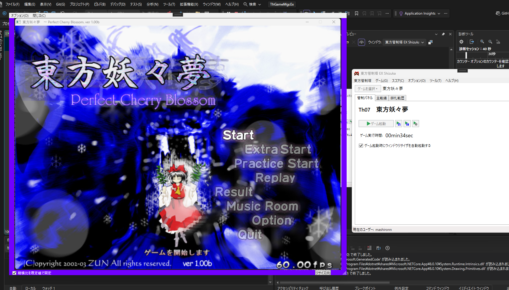

東方管制塔 EX のご紹介
東方管制塔 EX は、東方管制塔開発部が新たに開発中の多機能型の新東方管制塔です。
東方原作専用のゲームランチャーとしての機能だけでなく、スコアデータビューアをはじめ、多種多様な機能の実装が計画されています。
東方管制塔 EX の機能
ユーザー機能
東方管制塔 EX では、各種設定を「ユーザー」ごとに管理し、設定はユーザーごとに完全に隔離されます。
ゲームランチャー・管制パネル
既存の東方管制塔 Lite/NX に実装されているようなゲームランチャーや管制パネルも実装されています。
スコアビューア、御札戦歴ビューア

ハイスコアや御札戦歴といったスコアデータの中身を東方管制塔 EX から参照できます。
スコアビューアフィルタリング機能

スコアビューアにおいてハイスコアデータを難易度、自機でフィルタリングして表示したり、御札戦歴データをスペルカード術者(敵機)でフィルタリングして表示したりできます。
フレーム型ウィンドウリサイザ

初期の頃の作品など、サイズが固定のウィンドウをリサイズすることができます。
これらの画面は開発中のものであり、今後変更が加わる可能性が大いにあります。
実装されるかもしれない機能
以下の機能の実装を予定しています。
外部ツールランチャー
また、以下の機能の実装を検討しています。
リプレイファイルの管理機能
プラグイン機能
コードネーム
東方管制塔 EX では、メジャーバージョン毎に固有のコードネームを割り当てています。
ver0.x.xのコードネームは"Shizuka"であり、これは月面の「静かの海」に由来します。
ダウンロード
東方管制塔 EX "Shizuka" は現在開発中であり、一般公開はしばらく後です。しばしの間お待ちください…
アイコンについて
アイコンに使われている博麗霊夢のイラストはつくだに
(
@tukudani_2005)
さんが作成したものです。